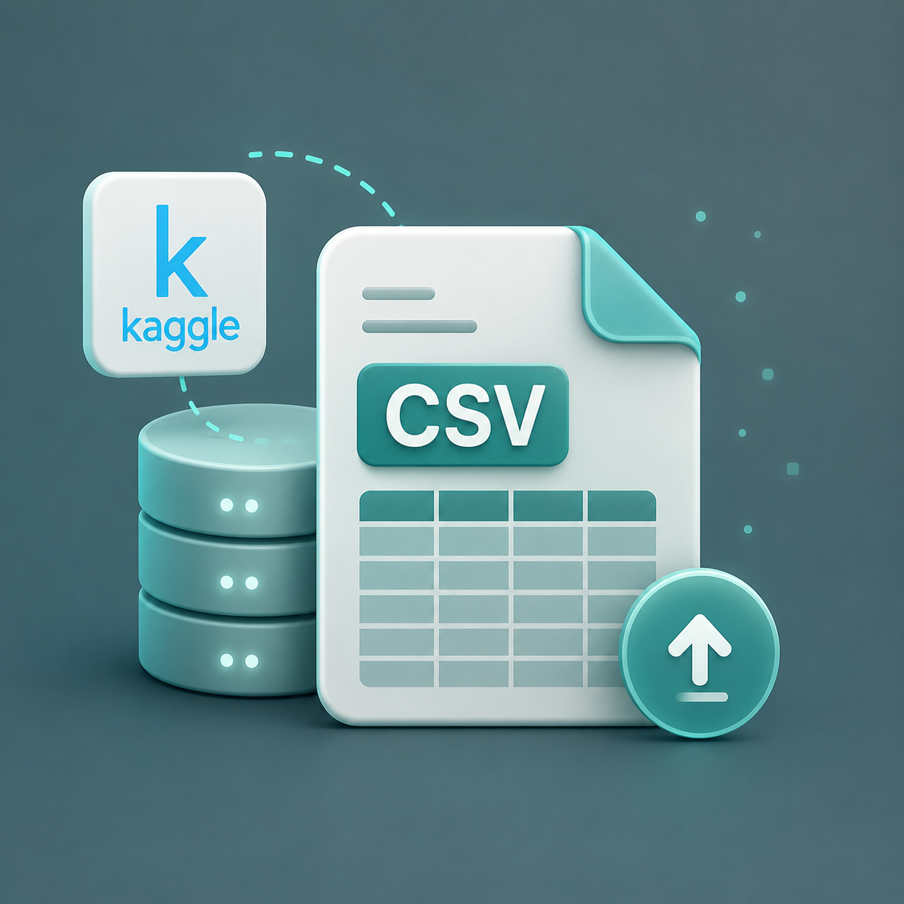
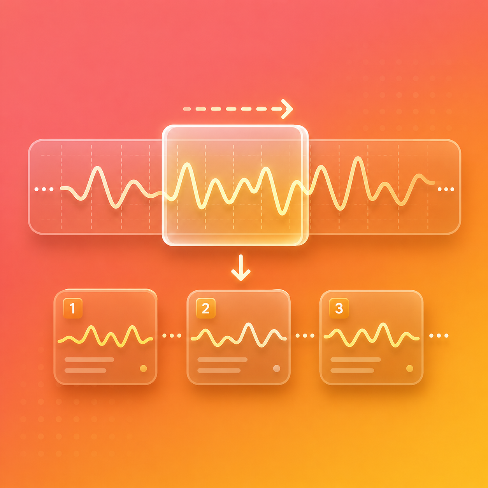
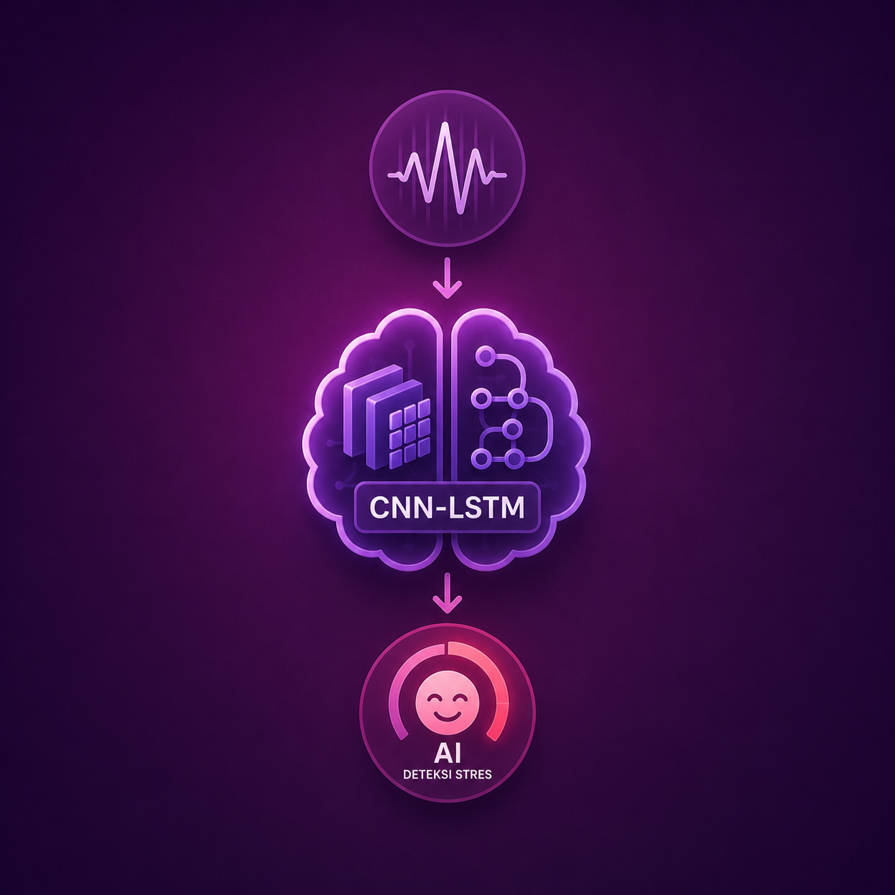

The Research Methodology

Subject Standardization
Z-score normalization transforms raw inputs to isolate personal baseline fluctuations.

Sliding Window
Continuous streams are sliced into 60 time steps to generate 3D analytical tensors.

CNN-LSTM Core
Subject-Dependent training accurately classifies binary stress levels.

Empirical Evaluation
Validating the reduction of false positives through confusion matrix analysis.